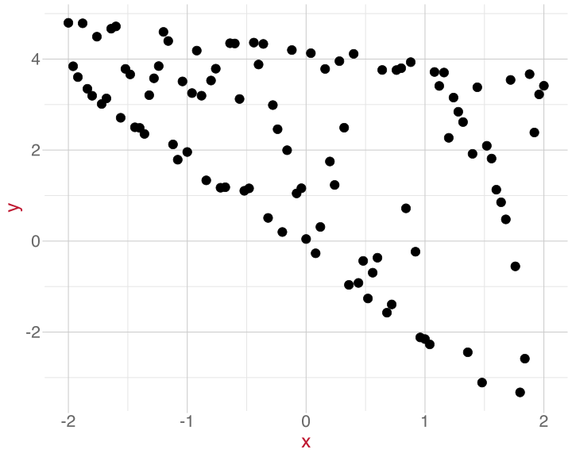
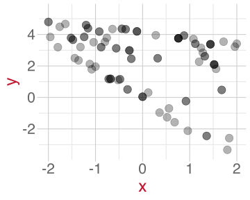
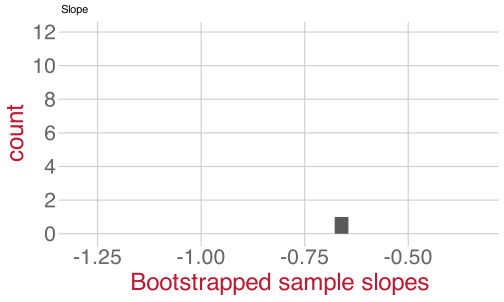
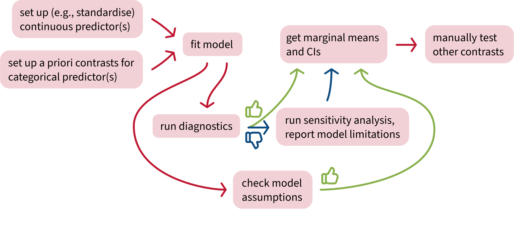

Bootstrapping and
confidence intervals
Data Analysis for Psychology in R 2
What’s a bootstrap?

What do bootstraps have to do with stats?
Unclear.
We’ll revisit this question later once we’ve seen the method in action.
Generate bootstrapped samples by sampling with replacement
Imagine our main sample contains five shapes:


If we could only sample each data point once:
Each sample is just a shuffled version of the original.
If we could sample each data point repeatedly:
Each sample is distinct!
To create diverse samples, we need to be able to sample each data point repeatedly.
This is called “sampling with replacement”.
Activity: Bootstrapping our own samples
Population: All numbers from 1 to 100.
Main sample (size 10):
6 8 17 32 70 76 79 81 85 93
Bootstrapped samples (size 10): Over to you!
Bootstrapping, step by step
From the main sample, take a new sample with replacement. You always sample the same number of data points as there were in the main sample. One sample bootstrapped.
Fit the linear model to the bootstrapped sample. Save the intercept and slope estimates.
Do 1 and 2 again and again. We’ll get a sampling distribution of intercept estimates and a sampling distribution of slope estimates.
(1)

(2)
Call:
lm(formula = y ~ x, data = boot_samples[[1]])
Coefficients:
(Intercept) x
2.462 -0.661 (3)


Sampling distribution of the slope

\(\leftarrow\) This sampling distribution consists of every slope value estimated by a linear model that was fit to a bootstrapped sample of data.
As we draw more bootstrapped samples, the mean slope (solid line) will come to match the original sample’s slope.
The standard deviation of the sampling distribution (dotted lines) = the standard error of the slope.
Bootstrapping is a different way of estimating a parameter’s standard error.
Interpreting confidence intervals
It’s common to imagine that a 95% CI means that there’s a 95% probability that our true value is in the interval.

But this isn’t what they really mean! :(
Building an analysis workflow


This week
Tasks

Attend your lab and work together on the exercises
Support

Help each other on the Piazza forum

Complete the weekly quiz

Attend office hours (see Learn page for details)